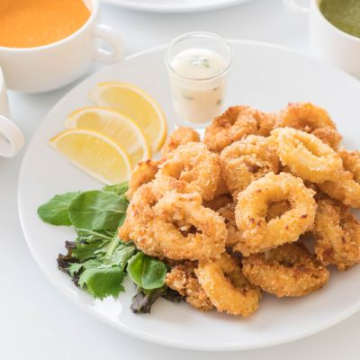

Calamaris
Calamaris kan prima als een tussengerecht,maar is meestal een lekker voorgerecht.
Ingrediënten
- 3 middelgrote inktvissen
- 150 ml plantaardige olie
- 3 el bloem
- 1 citroen, in partjes
Bereiding
- Leg de inktvissen op een werkvlak. Trek de tentakels van het lichaam weg, waarmee ook een deel van de inwendige organen wordt verwijderd. Snijd de tentakels net boven het punt waar ze samenkomen af en was ze grondig. Peuter alles uit de inktvis wat is achtergebleven, en gooi het weg.
- Haal het paarse vlies met je vingers van de vis af, of schraap het er voorzichtig af met een mes tot je witte lichaamszakjes hebt (een vleug roze is normaal). Snijd de ‘vleugels’ eraf en snijd ze dan doormidden. Spoel ze af onder koud water om alles wat er mogelijk in zit te verwijderen.
- Voor gebakken calamari snijd je de lichaamszakjes in ringen en snijd je elk bundeltje tentakels doormidden. Als je iets anders maakt, volg dan het betreffende recept. Nog een mogelijkheid: snijd de lichaamszakjes in platte rechthoekjes. Kerf een ruitpatroon aan de binnenkant, zodat de stukjes omkrullen tijdens de bereiding
- Verhit de olie in een pan op middelhoog vuur. Voeg zout en peper toe aan de bloem en wentel de inktvisringen en -tentakels erdoor; schud de overtollige bloem eraf. Laat de inktvis voorzichtig in de hete olie zakken en bak de calamari in 3–4 minuten goudbruin; keer ze af en toe om. Neem ze met een keukentang uit de pan en laat ze uitlekken op keukenpapier. Het bakken zal in porties moeten gebeuren. Serveer de calamari heet, besprenkeld met wat citroensap en met extra zout.

Tip Calamaris is erg lekker met stukjes citroen.